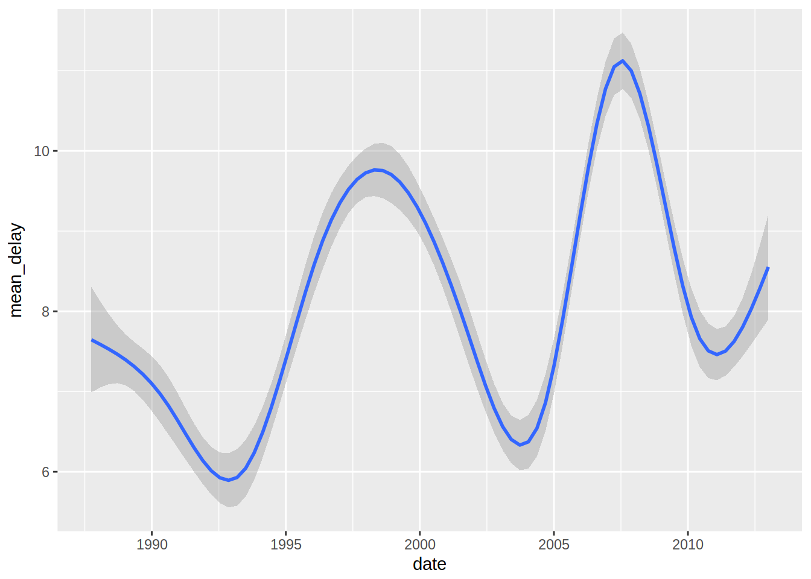

Importing 30GB of data into R with sparklyr
Disclaimer: the first part of this blog post draws heavily from Working with CSVs on the Command Line, which is a beautiful resource that lists very nice tips and tricks to work with CSV files before having to load them into R, or any other statistical software. I highly recommend it! Also, if you find this interesting, read also Data Science at the Command Line another great resource!
In this blog post I am going to show you how to analyze 30GB of data. 30GB of data does not qualify as big data, but it’s large enough that you cannot simply import it into R and start working on it, unless you have a machine with a lot of RAM.
Let’s start by downloading some data. I am going to import and analyze (very briefly) the airline dataset that you can download from Microsoft here. I downloaded the file AirOnTimeCSV.zip from AirOnTime87to12. Once you decompress it, you’ll end up with 303 csv files, each around 80MB. Before importing them into R, I will use command line tools to bind the rows together. But first, let’s make sure that the datasets all have the same columns. I am using Linux, and if you are too, or if you are using macOS, you can follow along. Windows users that installed the Linux Subsystem can also use the commands I am going to show! First, I’ll use the head command in bash. If you’re familiar with head() from R, the head command in bash works exactly the same:
[18-02-15 21:12] brodriguesco in /Documents/AirOnTimeCSV ➤ head -5 airOT198710.csv
"YEAR","MONTH","DAY_OF_MONTH","DAY_OF_WEEK","FL_DATE","UNIQUE_CARRIER","TAIL_NUM","FL_NUM",
1987,10,1,4,1987-10-01,"AA","","1",12478,"JFK","NY",12892,"LAX","CA","0900","0901",1.00,
1987,10,2,5,1987-10-02,"AA","","1",12478,"JFK","NY",12892,"LAX","CA","0900","0901",1.00
1987,10,3,6,1987-10-03,"AA","","1",12478,"JFK","NY",12892,"LAX","CA","0900","0859",-1.00
1987,10,4,7,1987-10-04,"AA","","1",12478,"JFK","NY",12892,"LAX","CA","0900","0900",0.00,let’s also check the 5 first lines of the last file:
[18-02-15 21:13] cbrunos in brodriguesco in /Documents/AirOnTimeCSV ➤ head -5 airOT201212.csv
"YEAR","MONTH","DAY_OF_MONTH","DAY_OF_WEEK","FL_DATE","UNIQUE_CARRIER","TAIL_NUM","FL_NUM",
2012,12,1,6,2012-12-01,"AA","N322AA","1",12478,"JFK","NY",12892,"LAX","CA","0900","0852",
2012,12,2,7,2012-12-02,"AA","N327AA","1",12478,"JFK","NY",12892,"LAX","CA","0900","0853",
2012,12,3,1,2012-12-03,"AA","N319AA","1",12478,"JFK","NY",12892,"LAX","CA","0900","0856"
2012,12,4,2,2012-12-04,"AA","N329AA","1",12478,"JFK","NY",12892,"LAX","CA","0900","1006"Why do that in bash instead of R? This way, I don’t need to import the data into R before checking its contents!
It does look like the structure did not change. Before importing the data into R, I am going to bind the rows of the datasets using other command line tools. Again, the reason I don’t import all the files into R is because I would need around 30GB of RAM to do so. So it’s easier to do it with bash:
head -1 airOT198710.csv > combined.csv
for file in $(ls airOT*); do cat $file | sed "1 d" >> combined.csv; done
On the first line I use head again to only copy the column names (the first line of the first file) into a new file called combined.csv.
This > operator looks like the now well known pipe operator in R, %>%, but in bash, %>% is actually |, not >. > redirects the output of the left hand side to a file on the right hand side, not to another command. On the second line, I loop over the files. I list the files with ls, and because I want only to loop over those that are named airOTxxxxx I use a regular expression, airOT* to only list those. The second part is do cat $file. do is self-explanatory, and cat stands for catenate. Think of it as head, but on all rows instead of just 5; it prints $file to the terminal. $file one element of the list of files I am looping over. But because I don’t want to see the contents of $file on my terminal, I redirect the output with the pipe, | to another command, sed. sed has an option, "1 d", and what this does is filtering out the first line, containing the header, from $file before appending it with >> to combined.csv. If you found this interesting, read more about it here.
This creates a 30GB CSV file that you can then import. But how? There seems to be different ways to import and work with larger than memory data in R using your personal computer. I chose to use {sparklyr}, an R package that allows you to work with Apache Spark from R. Apache Spark is a fast and general engine for large-scale data processing, and {sparklyr} not only offers bindings to it, but also provides a complete {dplyr} backend. Let’s start:
library(sparklyr)
library(tidyverse)
spark_dir = "/my_2_to_disk/spark/"
I first load {sparklyr} and the {tidyverse} and also define a spark_dir. This is because Spark creates a lot of temporary files that I want to save there instead of my root partition, which is on my SSD. My root partition only has around 20GO of space left, so whenever I tried to import the data I would get the following error:
java.io.IOException: No space left on deviceIn order to avoid this error, I define this directory on my 2TO hard disk. I then define the temporary directory using the two lines below:
config = spark_config()
config$`sparklyr.shell.driver-java-options` <- paste0("-Djava.io.tmpdir=", spark_dir)This is not sufficient however; when I tried to read in the data, I got another error:
java.lang.OutOfMemoryError: Java heap space
The solution for this one is to add the following lines to your config():
config$`sparklyr.shell.driver-memory` <- "4G"
config$`sparklyr.shell.executor-memory` <- "4G"
config$`spark.yarn.executor.memoryOverhead` <- "512"
Finally, I can load the data. Because I am working on my machine, I connect to a "local" Spark instance. Then, using spark_read_csv(), I specify the Spark connection, sc, I give a name to the data that will be inside the database and the path to it:
sc = spark_connect(master = "local", config = config)
air = spark_read_csv(sc, name = "air", path = "combined.csv")On my machine, this took around 25 minutes, and RAM usage was around 6GO.
It is possible to use standard {dplyr} verbs with {sparklyr} objects, so if I want the mean delay at departure per day, I can simply write:
tic = Sys.time()
mean_dep_delay = air %>%
group_by(YEAR, MONTH, DAY_OF_MONTH) %>%
summarise(mean_delay = mean(DEP_DELAY))
(toc = Sys.time() - tic)
Time difference of 0.05634999 secs
That’s amazing, only 0.06 seconds to compute these means! Wait a minute, that’s weird… I mean my computer is brand new and quite powerful but still… Let’s take a look at mean_dep_delay:
head(mean_dep_delay)# Source: lazy query [?? x 4]
# Database: spark_connection
# Groups: YEAR, MONTH
YEAR MONTH DAY_OF_MONTH mean_delay
<int> <int> <int> <dbl>
1 1987 10 9 6.71
2 1987 10 10 3.72
3 1987 10 12 4.95
4 1987 10 14 4.53
5 1987 10 23 6.48
6 1987 10 29 5.77
Warning messages:
1: Missing values are always removed in SQL.
Use `AVG(x, na.rm = TRUE)` to silence this warning
2: Missing values are always removed in SQL.
Use `AVG(x, na.rm = TRUE)` to silence this warning
Surprisingly, this takes around 5 minutes to print? Why? Look at the class of mean_dep_delay: it’s a lazy query that only gets evaluated once I need it. Look at the first line; lazy query [?? x 4]. This means that I don’t even know how many rows are in mean_dep_delay! The contents of mean_dep_delay only get computed once I explicitly ask for them. I do so with the collect() function, which transfers the Spark object into R’s memory:
tic = Sys.time()
r_mean_dep_delay = collect(mean_dep_delay)
(toc = Sys.time() - tic)
Time difference of 5.2399 minsAlso, because it took such a long time to compute: I save it to disk:
saveRDS(r_mean_dep_delay, "mean_dep_delay.rds")So now that I transferred this sparklyr table to a standard tibble in R, I can create a nice plot of departure delays:
library(lubridate)
dep_delay = r_mean_dep_delay %>%
arrange(YEAR, MONTH, DAY_OF_MONTH) %>%
mutate(date = ymd(paste(YEAR, MONTH, DAY_OF_MONTH, sep = "-")))
ggplot(dep_delay, aes(date, mean_delay)) + geom_smooth()## `geom_smooth()` using method = 'gam'
That’s it for now, but in a future blog post I will continue to explore this data!
If you found this blog post useful, you might want to follow me on twitter for blog post updates.